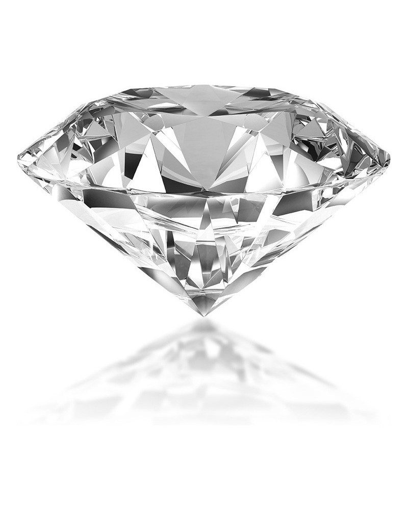
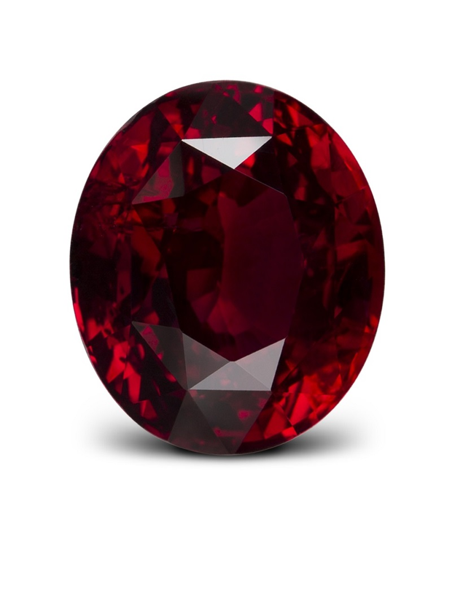
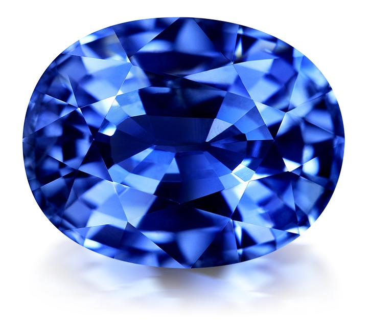
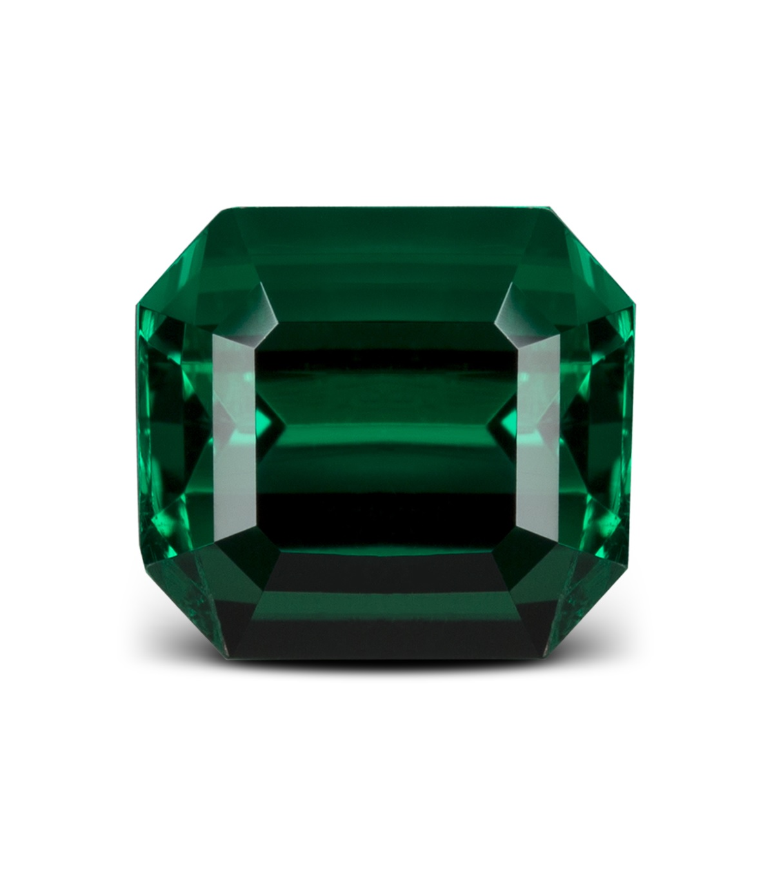
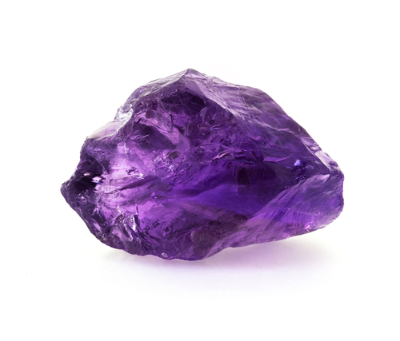
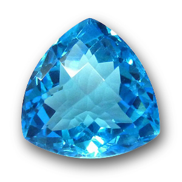
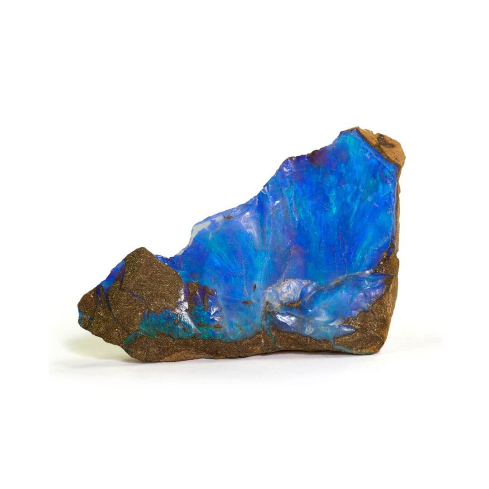

Galerie des Pierres Précieuses
Pierres Précieuses Classiques
-
Diamant
Le diamant, symbole d'éternité, est la pierre la plus dure et la plus prisée.
-
Rubis
Le rubis, d'un rouge intense, est associé à la passion et à l'énergie.
-
Saphir
Le saphir, généralement bleu, symbolise la sagesse et la royauté.
-
Émeraude
L'émeraude, d'un vert profond, est associée à la croissance et l'harmonie.
Pierres Semi-Précieuses
-
Améthyste
L'améthyste, de couleur violette, est réputée pour ses propriétés apaisantes.
-
Topaze
La topaze, souvent bleue, est associée à la loyauté et l'amitié.
-
Opale
L'opale, aux reflets multicolores, est symbole de créativité et d'imagination.